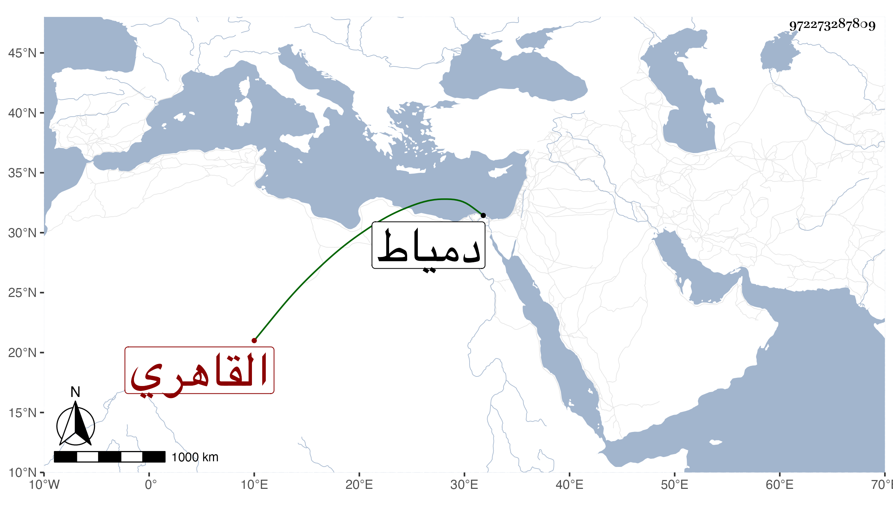

0902Sakhawi.DawLamic.ITO20230111-ara1.EIS1600.972273287809
Biography ID: 972273287809
594
محمد بن علي بن يوسيف الشمس بن النور القاهري والد سعد الدين محمد الآتي ويعرف بابن الجندي لكونه هو الذي رباه فإن والده وكان تاجرا توفي وهو حمل فتزوج بأمه فعرف به وكذا يعرف بالذهبي . ولد سنة إحدى وعشرين وثمانمائة ونشأ فحفظ القرآن والمنهاج وعرضه على شيخنا والبساطي ونحوهما واشتغل قليلا ، ومن شيوخه أبو الجود ولكنه لم ينجب وهو ممن سمع ختم البخاري في الظاهرية القديمة على الأربعين وبواسطة زوج أمه أقرأ الفخري عثمان ابن الظاهر بل صار يؤم به فتميز واستمر في خدمته حتى عمل السلطنة وبعده سكن بل توجه إليه لدمياط وأم به هناك مدة ورجع فمات فجأة في شعبان سنة سبع وثمانين ودفن بحوش سعيد السعداء بالقرب من الكمال الدميري . وقد تزوج بأمه بعد ابن الجندي السراج العبادي واستولدها كمال الدين محمدا واستمرت تحته حتى مات .
